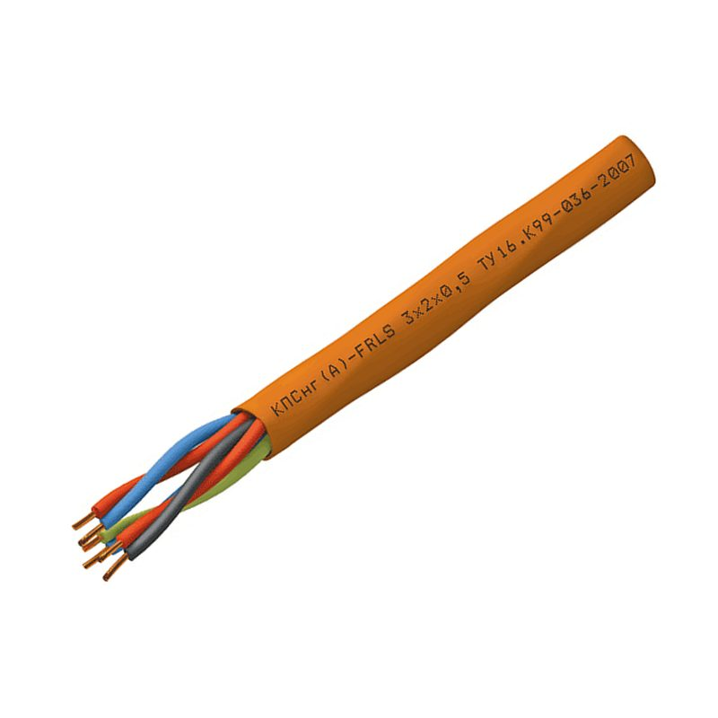

Кабель КПСнг(А)-FRLS 1×2×1,5 оптом
Кабель для систем охраны и противопожарной защиты — купить оптом бухтами и на барабанах

Наличие: [уточняется]
Отправить спецификацию- Резка в размер — [условия уточняются]
- документы на партию [перечень уточняется]
- Доставка: условия
Характеристики КПСнг(А)-FRLS 1×2×1,5
| Марка | КПСнг(А)-FRLS |
|---|---|
| Типоразмер | 1×2×1,5 |
| Число жил | 2 |
| Сечение / размер жилы | 1,5 мм² |
| Материал жилы | медь |
| Номинальное напряжение | слаботочные цепи (по ТУ завода) |
| Исполнение по пожарной безопасности | нг(А) LS FR |
| Нормативный документ | ТУ завода (типовой для марки; у конкретного завода — по паспорту) |
| Наружный диаметр, мм | [уточнить по паспорту завода] |
| Масса, кг/км | [уточнить по паспорту завода] |
| Производитель | уточняется в КП; марку выпускают, в т.ч.: Спецкабель (по каталогам заводов) |
| Единица продажи | метр |
| Отгрузка | бухта, барабан |
| Кратность / мин. партия | [уточняется] |
Расшифровка марки КПСнг(А)-FRLS
| КПС | серия кабелей симметричных для систем охраны и противопожарной защиты (по ТУ производителя) |
|---|---|
| нг(А) | не распространяет горение при групповой прокладке, категория А |
| FR | огнестойкий |
| LS | пониженное дымо- и газовыделение |
Применение
Шлейфы пожарной сигнализации, линии СОУЭ, системы охраны. Размер указывается как N×2×S: число пар × 2 жилы × сечение, мм².
Другие сечения КПСнг(А)-FRLS
Частые вопросы
Что означает маркировка КПСнг(А)-FRLS?
КПС — серия кабелей симметричных для систем охраны и противопожарной защиты (по ТУ производителя); нг(А) — не распространяет горение при групповой прокладке, категория А; FR — огнестойкий; LS — пониженное дымо- и газовыделение.
Где применяется Кабель КПСнг(А)-FRLS 1×2×1,5?
Шлейфы пожарной сигнализации, линии СОУЭ, системы охраны. Размер указывается как N×2×S: число пар × 2 жилы × сечение, мм².
На какое напряжение рассчитан КПСнг(А)-FRLS?
Номинальное напряжение: слаботочные цепи (по ТУ завода). Точные характеристики — по паспорту завода-изготовителя.
Как купить Кабель КПСнг(А)-FRLS 1×2×1,5 оптом?
Добавьте позицию в запрос счёта или пришлите спецификацию — подготовим коммерческое предложение с ценой, наличием и сроком поставки.
Есть спецификация из проекта?
Пришлите файл (Excel, PDF, фото) — подберём марки и аналоги, подготовим КП и счёт. Срок ответа [уточняется].